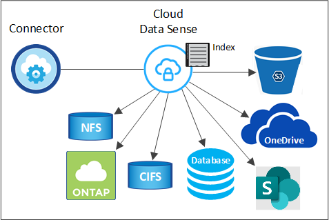

Request doc changes
Request doc changes Edit this page
Edit this page Learn how to contribute
Learn how to contributeLearn about Cloud Data Sense
Contributors
Cloud Data Sense is a data governance service for Cloud Manager that scans your corporate on-premises and cloud data sources and working environments to map and classify data, and to identify private information. This can help reduce your security and compliance risk, decrease storage costs, and assist with your data migration projects.
Features
Cloud Data Sense provides several tools that can help you with your compliance efforts. You can use Data Sense to:
-
Identify Personal Identifiable Information (PII)
-
Identify a wide scope of sensitive information as required by GDPR, CCPA, PCI, and HIPAA privacy regulations
-
Respond to Data Subject Access Requests (DSAR)
-
Notify Cloud Manager users through email when files contain certain PII (you define this criteria using Policies)
-
View and modify Azure Information Protection (AIP) labels in your files
-
Add custom tags to files (for example, "needs to be moved") and assign a Cloud Manager user so that person can own updates to the files
-
Copy, move, and delete files
Cloud Data Sense also provides tools that can help with your governance efforts. You can use Cloud Data Sense to:
-
Identify the stale data, non-business data, duplicate files, files with open permissions, and very large files in your systems.
You can use this information to decide whether you want to move, delete, or tier some files to less expensive object storage.
-
View the size of data and whether any of the data contains sensitive information prior to moving it.
This is useful if you are planning to migrate data from on-premises locations to the cloud.
Supported working environments and data sources
Cloud Data Sense can scan data from the following types of working environments and data sources:
Working environments:
-
Cloud Volumes ONTAP (deployed in AWS, Azure, or GCP)
-
On-premises ONTAP clusters
-
Azure NetApp Files
-
Amazon FSx for ONTAP
-
Amazon S3
Data sources:
-
Non-NetApp file shares
-
Object storage (that uses S3 protocol)
-
Databases
-
OneDrive accounts
-
SharePoint accounts
-
Google Drive accounts
Data Sense supports NFS versions 3.x, 4.0, and 4.1, and CIFS versions 1.x, 2.0, 2.1, and 3.0.
Cost
-
The cost to use Cloud Data Sense depends on the amount of data that you’re scanning. The first 1 TB of data that Data Sense scans in a Cloud Manager workspace is free. This includes all data from all working environments and data sources. A subscription to the AWS, Azure, or GCP Marketplace, or a BYOL license from NetApp, is required to continue scanning data after that point. See pricing for details.
-
Installing Cloud Data Sense in the cloud requires deploying a cloud instance, which results in charges from the cloud provider where it is deployed. See the type of instance that is deployed for each cloud provider. There is no cost if you install Data Sense on an on-premises system.
-
Cloud Data Sense requires that you have deployed a Cloud Manager Connector. In many cases you already have a Connector because of other storage and services you are using in Cloud Manager. The Connector instance results in charges from the cloud provider where it is deployed. See the type of instance that is deployed for each cloud provider. There is no cost if you install the Connector on an on-premises system.
Data transfer costs
Data transfer costs depend on your setup. If the Cloud Data Sense instance and data source are in the same Availability Zone and region, then there are no data transfer costs. But if the data source, such as a Cloud Volumes ONTAP system or S3 Bucket, is in a different Availability Zone or region, then you’ll be charged by your cloud provider for data transfer costs. See these links for more details:
The Cloud Data Sense instance
When you deploy Data Sense in the cloud, Cloud Manager deploys the instance in the same subnet as the Connector. Learn more about Connectors.

|
If the Connector is installed on-prem, it deploys the Cloud Data Sense instance in same VPC or VNet as the first Cloud Volumes ONTAP system in the request. You can install Data Sense on-prem as well. |

Note the following about the default instance:
-
In AWS, Cloud Data Sense runs on an m5.4xlarge instance with a 500 GB GP2 disk. The operating system image is Amazon Linux 2 (Red Hat 7.3.1).
In regions where m5.4xlarge isn’t available, Data Sense runs on an m4.4xlarge instance instead.
-
In Azure, Cloud Data Sense runs on a Standard_D16s_v3 VM with a 512 GB disk. The operating system image is CentOS 7.8.
-
In GCP, Cloud Data Sense runs on an n2-standard-16 VM with a 512 GB Standard persistent disk. The operating system image is CentOS 7.9.
In regions where n2-standard-16 isn’t available, Data Sense runs on an n2d-standard-16 or n1-standard-16 VM instead.
-
The instance is named CloudCompliance with a generated hash (UUID) concatenated to it. For example: CloudCompliance-16bb6564-38ad-4080-9a92-36f5fd2f71c7
-
Only one Data Sense instance is deployed per Connector.
-
Upgrades of Data Sense software is automated as long as the instance has internet access.

|
The instance should remain running at all times because Cloud Data Sense continuously scans the data. |
Using a smaller instance type
You can deploy Data Sense on a system with fewer CPUs and less RAM, but there are some limitations when using these less powerful systems.
| System size | Specs | Limitations |
|---|---|---|
Extra Large (default) |
16 CPUs, 64 GB RAM, 500 GB SSD |
None |
Medium |
8 CPUs, 32 GB RAM, 200 GB SSD |
Slower scanning, and can only scan up to 1 million files. |
Small |
8 CPUs, 16 GB RAM, 100 GB SSD |
Same limitations as "Medium", plus the ability to identify data subject names inside files is disabled. |
When deploying Data Sense in the cloud, email ng-contact-data-sense@netapp.com for assistance if you want to use one of these smaller systems. We’ll need to work with you to deploy these smaller cloud configurations.
When deploying Data Sense on-premises, just use a Linux host with the smaller specifications. You do not need to contact NetApp for assistance.
How Cloud Data Sense works
At a high-level, Cloud Data Sense works like this:
-
You deploy an instance of Data Sense in Cloud Manager.
-
You enable high-level mapping or deep-level scanning on one or more working environments or data sources.
-
Data Sense scans the data using an AI learning process.
-
You use the provided dashboards and reporting tools to help in your compliance and governance efforts.
How scans work
After you enable Cloud Data Sense and select the volumes, buckets, database schemas, or OneDrive or SharePoint user data you want to scan, it immediately starts scanning the data to identify personal and sensitive data. It maps your organizational data, categorizes each file, and identifies and extracts entities and predefined patterns in the data. The result of the scan is an index of personal information, sensitive personal information, data categories, and file types.
Data Sense connects to the data like any other client by mounting NFS and CIFS volumes. NFS volumes are automatically accessed as read-only, while you need to provide Active Directory credentials to scan CIFS volumes.

After the initial scan, Data Sense continuously scans your data to detect incremental changes (this is why it’s important to keep the instance running).
You can enable and disable scans at the volume level, at the bucket level, at the database schema level, at the OneDrive user level, and at the SharePoint site level.
What’s the difference between Mapping and Classification scans
Cloud Data Sense enables you to run a general "mapping" scan on selected working environments and data sources. Mapping provides only a high-level overview of your data, whereas Classification provides deep-level scanning of your data. Mapping can be done on your data sources very quickly because it does not access files to see the data inside.
Many users like this functionality because they want to quickly scan their data to identify the data sources that require more research - and then they can enable classification scans only on those required data sources or volumes.
The table below shows some of the differences:
| Feature | Classification | Mapping |
|---|---|---|
Scan speed |
Slow |
Fast |
List of file types and used capacity |
Yes |
Yes |
Number of files and used capacity |
Yes |
Yes |
Age and size of files |
Yes |
Yes |
Ability to run a Data Mapping Report |
Yes |
Yes |
Data Investigation page to view file details |
Yes |
No |
Search for names within files |
Yes |
No |
Create policies that provide custom search results |
Yes |
No |
Categorize data using AIP labels and Status tags |
Yes |
No |
Copy, delete, and move source files |
Yes |
No |
Ability to run other reports |
Yes |
No |
Information that Cloud Data Sense indexes
Data Sense collects, indexes, and assigns categories to your data (files). The data that Data Sense indexes includes the following:
- Standard metadata
-
Cloud Data Sense collects standard metadata about files: the file type, its size, creation and modification dates, and so on.
- Personal data
-
Personally identifiable information such as email addresses, identification numbers, or credit card numbers. Learn more about personal data.
- Sensitive personal data
-
Special types of sensitive information, such as health data, ethnic origin, or political opinions, as defined by GDPR and other privacy regulations. Learn more about sensitive personal data.
- Categories
-
Cloud Data Sense takes the data that it scanned and divides it into different types of categories. Categories are topics based on AI analysis of the content and metadata of each file. Learn more about categories.
- Types
-
Cloud Data Sense takes the data that it scanned and breaks it down by file type. Learn more about types.
- Name entity recognition
-
Cloud Data Sense uses AI to extract natural persons’ names from documents. Learn about responding to Data Subject Access Requests.
Networking overview
Cloud Manager deploys the Cloud Data Sense instance with a security group that enables inbound HTTP connections from the Connector instance.
When using Cloud Manager in SaaS mode, the connection to Cloud Manager is served over HTTPS, and the private data sent between your browser and the Data Sense instance are secured with end-to-end encryption, which means NetApp and third parties can’t read it.
Outbound rules are completely open. Internet access is needed to install and upgrade the Data Sense software and to send usage metrics.
If you have strict networking requirements, learn about the endpoints that Cloud Data Sense contacts.
User access to compliance information
The role each user has been assigned provides different capabilities within Cloud Manager and within Cloud Data Sense:
-
An Account Admin can manage compliance settings and view compliance information for all working environments.
-
A Workspace Admin can manage compliance settings and view compliance information only for systems that they have permissions to access. If a Workspace Admin can’t access a working environment in Cloud Manager, then they can’t see any compliance information for the working environment in the Data Sense tab.
-
Users with the Compliance Viewer role can only view compliance information and generate reports for systems that they have permission to access. These users cannot enable/disable scanning of volumes, buckets, or database schemas. These users can’t copy, move, or delete files either.